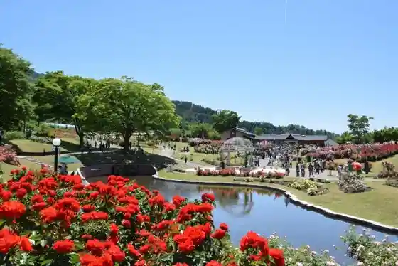
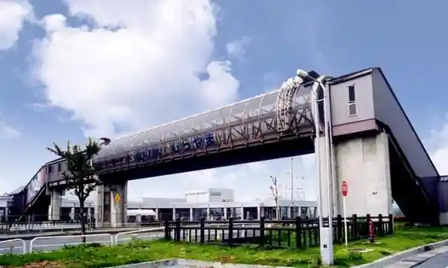
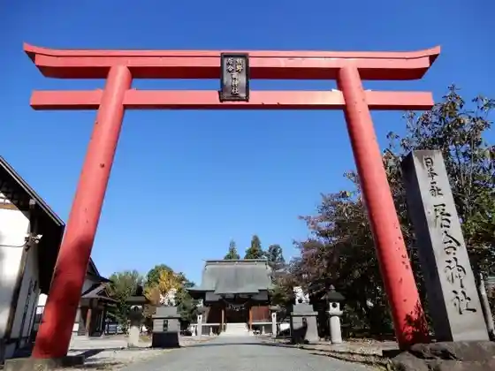
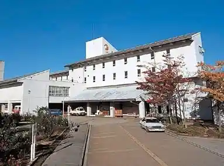

Saijo Kawa San Nansho Fune Kudari
Murayama, Yamagata · 0237-56-3535 · Official / source link
Higashisawa Bara Park
Murayama, Yamagata · 0237-55-2111 0237-53-1351 · Official / source link

Roadside Station (Murayama)
Murayama, Yamagata · 0237-55-7100 · Official / source link

Nippon'ichi Sha Hayashizaki Iai Shrine
Murayama, Yamagata · 0237-53-1351 · Official / source link

Kuahausu Goten
Murayama, Yamagata · 0237-56-3351 · Official / source link

Yubunezawa Onsen
Murayama, Yamagata · 0237-58-2439 · Official / source link
Shirohebi Falls
Murayama, Yamagata · 0237-55-2111 · Official / source link
Soba Uchi Experience / no Village Densho no Ie
Murayama, Yamagata · 0237-53-3277 · Official / source link
Tennen Junsai no Tsumi Tori Experience
Murayama, Yamagata · 0237-53-1351 · Official / source link
Saijo Tokunai Memorial Museum
Murayama, Yamagata · 0237-55-3003 · Official / source link
yamagata glam
Murayama, Yamagata · Official / source link
Saijo Kawa Art Museum
Murayama, Yamagata · 0237-52-3195 · Official / source link
Hosu Garden Murayama
Murayama, Yamagata · 0237‐55‐6859 · Official / source link
Higashisawa Botohausu
Murayama, Yamagata · 0237-55-2046 · Official / source link
Shippoyaki Experience
Murayama, Yamagata · 090-4048-8772 · Official / source link
Kanko Sakurambo Sono Matsubara Farm
Murayama, Yamagata · Official / source link
Saijo Kawa Byupointo
Murayama, Yamagata · 023-630-3342 · Official / source link
Kanda Shrine (Ibo no Kamisama)
Murayama, Yamagata · 0237-55-2111 · Official / source link
Saijo Kawa Goten Promenade Shuyu Kosu
Murayama, Yamagata · 0237-55-2111 · Official / source link
to Osamu Kama Goten Yaki
Murayama, Yamagata · 0237-56-3338 · Official / source link
Shoren Yama Seijo In (Shingonshu) / Saijo Sanju San Kannon Dai 20 Ban Komatsuzawa Kannon
Murayama, Yamagata · Official / source link
Tateoka Castle Ruins
Murayama, Yamagata · 0237-55-2111 · Official / source link
Haguro Shrine (Murayama)
Murayama, Yamagata · 0237-55-2111 · Official / source link
Murayama Kokuzo In
Murayama, Yamagata · 0237-55-2111 · Official / source link
Yuki no Kannon / Fubo Hon Tera
Murayama, Yamagata · 0237-55-2111 · Official / source link
Hakusan Shrine (Murayama)
Murayama, Yamagata · 0237-55-2111 · Official / source link
Atago Shrine / Murayama
Murayama, Yamagata · 0237-55-2111 · Official / source link
Shoun Tera
Murayama, Yamagata · 0237-55-2111 · Official / source link
Tateyama Kosu (Tateoka Kominkan Bunkan)
Murayama, Yamagata · 0237-55-2111 · Official / source link
Higashisawa Park Cherry Blossoms
Murayama, Yamagata · 0237-55-2111 · Official / source link
Fubo Hon Tera
Murayama, Yamagata · 0237-55-2111 · Official / source link
Ishidorii
Murayama, Yamagata · 0237-55-2111 · Official / source link
Kawashima Yama Sansaku Michi
Murayama, Yamagata · 0237-55-2111 · Official / source link
Fuki Sawa Falls
Murayama, Yamagata · 0237-55-2111 · Official / source link
Magoroku Falls
Murayama, Yamagata · Official / source link
Hongaku Tera
Murayama, Yamagata · 0237-55-2111 · Official / source link
Tateoka Kotsu
Murayama, Yamagata · 0237-55-3131 · Official / source link
Kawashima Yama Iseki
Murayama, Yamagata · 0237-55-2111 · Official / source link
Mizubasho Sono
Murayama, Yamagata · 0237-55-2111 · Official / source link
Soba Tsuka
Murayama, Yamagata · 0237-55-2111 · Official / source link
Koshiki Gaku
Murayama, Yamagata · Official / source link
Namesawa Falls
Murayama, Yamagata · 0237-55-2111 · Official / source link
Saijo Tokunai Bohi / Hongaku Tera
Murayama, Yamagata · 0237-55-2111 · Official / source link